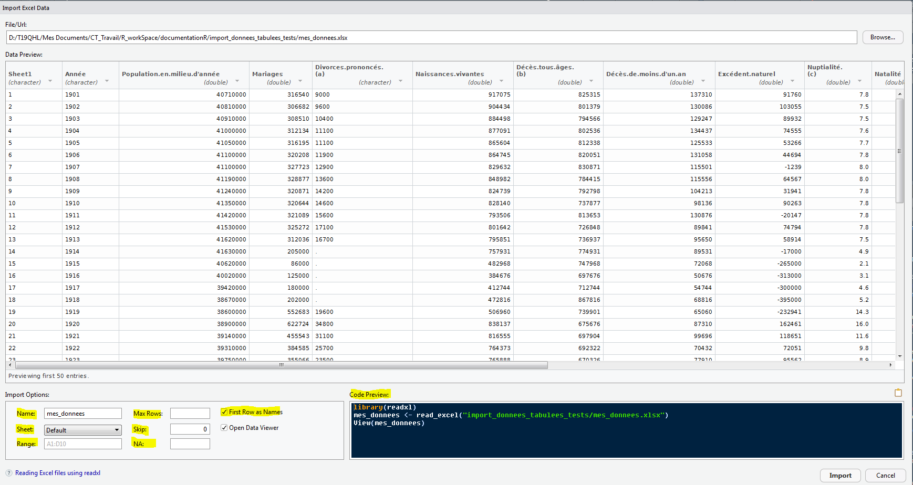
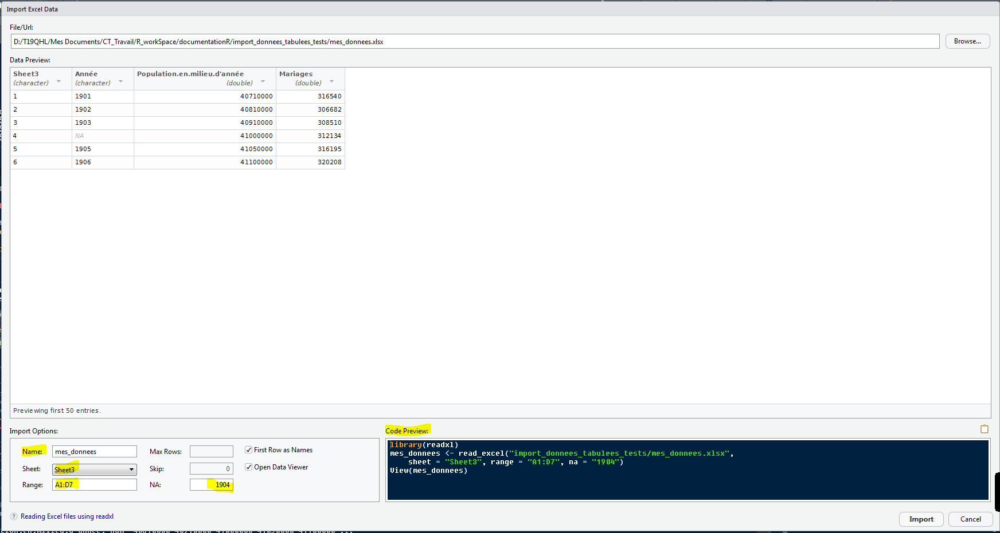

# Attention, vous devez adapter le chemin des fichiers à votre environnement de travail
chemin_xls <- "C:/Users/mon_IDEP_Insee/Dossier_utilitR/mes_donnees/mes_donnees.xls"
chemin_xlsx <- "C:/Users/mon_IDEP_Insee/Dossier_utilitR/mes_donnees/mes_donnees.xlsx"14 Importer des fichiers issus de tableurs (Excel, Calc)
14.1 Tâches concernées et recommandations
L’utilisateur souhaite importer dans R des données issues de tableurs (extension type xls, xlsx ou ods).
Tâche concernée et recommandation
- Il est recommandé d’utiliser la fonction
read.xlsx()du packageopenxlsxpour importer des fichiersxlsx. -
Il est recommandé d’utiliser la fonction
read_excel()du packagereadxlpour importer des fichiersxlsxouxls. Pour les fichiersxlsx, la fonctionread.xlsx()du packageopenxlsxpeut également être utilisée même s’il est un peu moins performante queread_excel()sur les gros fichiers (voir ici). - Il est recommandé d’utiliser la fonction
read_odsdu packagereadODSpour importer des fichiersods.
Il est déconseillé d’utiliser le package xlsx.
14.2 Importer un fichier xlsx ou xls
L’importation de fichiers xlsx et xls va être illustré à partir de deux jeux de données créés à partir de données présentes sur le site de l’Insee, en formats xls et xlsx. Pour reproduire les exemples ci-dessous, vous devez :
- télécharger les jeux de données ici puis le sauvegarder sur votre poste ;
- définir dans
Rles chemins des fichiers nomméschemin_xlsetchemin_xlsx. Voici un exemple :
Tip
Si vous êtes complètement débutants en R, il est recommandé d’utiliser l’utilitaire d’importation de RStudio présentée ci-dessous. Une fois que les données sont correctement importées, vous pourrez copier-coller le code dans votre script R et vous familiariser avec les fonctions des packages openxlsx et readxl.
14.2.1 Importer un fichier xlsx ou xls avec l’interface graphique de RStudio
RStudio propose une interface graphique très commode pour lire des fichiers xls et xlsx (mais aussi des tables SAS ou des fichiers csv, mais pas les ods), reposant sur les packages haven et readxl. Le grand intérêt de cette interface est qu’elle fournit le code utilisé pour importer les données. Vous pouvez donc le copier dans vos scripts pour le réutiliser, et ainsi vous familiariser avec les fonctions d’importation.
On accède à cette interface avec : File > Import Dataset > From Excel.... Les différents menus permettent notamment de sélectionner l’onglet et la zone à importer et de nommer la table d’affectation.
Dans ce premier exemple, on importe l’onglet par défaut (Sheet1), de la table mes_donnees.xlsx (File/Url) qu’on nomme mes_donnees (Name). On garde la première ligne du fichier comme noms de colonnes (First Row as Names). Vous pouvez voir que le code d’importation apparaît en bas à droite, dans la cellule Code Preview.

Dans l’exemple suivant, on n’importe qu’une plage de données (A1:D5) de l’onglet nommé Sheet3 (Sheet), et on remplace les valeurs manquantes par 1904.

14.2.2 Importer un fichier xlsx avec le package openxlsx
Pour importer un fichier au format xlsx, la fonction read.xlsx() du package openxlsx peut être utilisée pour des fichiers de tailles raisonnables. Cette fonction permet de charger les données du tableur dans un data.frame. Il ne faut pas oublier de charger le package avec library.
14.2.2.2 Quelques exemples
Les exemples qui suivent vous présentent l’utilisation de la fonction read.xlsx dans quelques cas courants.
- Utilisation la plus simple : on importe toutes les données du premier onglet, en supposant que la première ligne contient les noms de variables.
Sheet1 Année Population.en.milieu.d'année Mariages Divorces.prononcés.(a)
1 1 1901 40710000 316540 9000
2 2 1902 40810000 306682 9600
3 3 1903 40910000 308510 10400
Naissances.vivantes Décès.tous.âges.(b) Décès.de.moins.d'un.an
1 917075 825315 137310
2 904434 801379 130086
3 884498 794566 129247
Excédent.naturel Nuptialité.(c) Natalité Mortalité Accroissement.naturel
1 91760 7.8 22.5 20.3 2.2
2 103055 7.5 22.2 19.6 2.6
3 89932 7.5 21.6 19.4 2.2
Taux.de.mortalité.infantile.pour.1.000.naissances.vivantes date
1 151.1 2020-06-22
2 143.3 2020-06-22
3 145.3 2020-06-22-
Définir l’onglet à importer : on importe toutes les données du troisième onglet, en supposant que la première ligne contient les noms de variables. On définit l’onglet à importer avec le paramètre
sheeten précisant soit le nom de l’onglet soit son index (sa position dans le fichier). Il est conseillé d’utiliser le nom de l’onglet plutôt que sa position.
# Chargement du 3ème onglet
mesDonnees <- openxlsx::read.xlsx(xlsxFile = chemin_xlsx, sheet = "Sheet3")
Note
La fonction openxlsx::getSheetNames() permet de récupérer les noms des onglets du fichier sans avoir à l’ouvrir.
openxlsx::getSheetNames(chemin_xlsx)[1] "Sheet1" "Sheet2" "Sheet3"-
Préciser où débute la sélection : par défaut, on importe les données à partir de la première ligne de l’onglet spécifié. On peut, avec le paramètre
startRow, définir la ligne de début d’importation. Dans l’exemple ci-dessous, on n’importe les données qu’à compter de la troisième ligne. Si on laisse le paramètrecolNames = TRUE, la première de ces lignes est considérée comme noms de colonnes, ce qui peut donner des résultats absurdes. Si c’est le cas, on peut utiliser le paramètrecolNames=FALSE.
mesDonnees <- openxlsx::read.xlsx(xlsxFile = chemin_xlsx, startRow=3, colNames=FALSE)
# Les 4 premières lignes du data.frame
head(mesDonnees, 4) X1 X2 X3 X4 X5 X6 X7 X8 X9 X10 X11 X12 X13
1 2 1902 40810000 306682 9600 904434 801379 130086 103055 7.5 22.2 19.6 2.6
2 3 1903 40910000 308510 10400 884498 794566 129247 89932 7.5 21.6 19.4 2.2
3 4 1904 41000000 312134 11100 877091 802536 134437 74555 7.6 21.4 19.6 1.8
4 5 1905 41050000 316195 11100 865604 812338 125533 53266 7.7 21.1 19.8 1.3
X14 X15
1 143.3 2020-06-22
2 145.3 2020-06-22
3 152.9 2020-06-22
4 144.5 2020-06-22-
Sélectionner les lignes et colonnes à importer : on peut définir les lignes et colonnes qu’on souhaite importer en le précisant, avec un vecteur numérique, avec les paramètres
rowsetcols.
mesDonnees <- openxlsx::read.xlsx(xlsxFile = chemin_xlsx, rows=c(1,4:6,9), cols=c(1,3:4))
head(mesDonnees, 4) Sheet1 Population.en.milieu.d'année Mariages
1 3 40910000 308510
2 4 41000000 312134
3 5 41050000 316195
4 8 41190000 328877-
Vérification du respect des normes syntaxiques dans les noms de variables : les noms de colonnes dans un fichier Excel ne peuvent pas toujours être utilisés directement comme noms de variables dans
R. Les paramètrescheck.namesetsep.namespermettent de modifier les noms de variables pour les adapter aux règles de bonnes pratiques syntaxiques :- Le paramètre
check.names=TRUEmodifie les noms de variables qui posent problème. Par exemple,nom-de-variabledans Excel devientnom.de.variabledansR. - Le paramètre
sep.namespermet de définir le caractère par lequel remplacer les espaces.
- Le paramètre
Note
Pour l’exportation de données au format xlsx, le package openxlsx est à privilégier car il présente de multiples options très pratiques pour personnaliser les exports. Les deux vignettes du package sur ce sujet apportent quelques exemples des potentialités d’écriture de classeurs xlsx. La première présente notamment l’utilisation de la fonction write.xlsx() et la seconde illustre quelques possibilités autour de la fonction writeData().
14.2.3 Importer un fichier xls avec le package readxl
Pour importer un fichier au format xls ou xlsx, il est recommandé d’utiliser la fonction read_excel() du package readxl. Cette fonction permet en effet d’importer des fichiers volumineux de manière plus rapide que le package openxlsx. Les données du tableur sont alors chargées dans un tibble (voir la fiche [Manipuler des données avec le tidyverse] pour en apprendre davantage sur le tibble). Il ne faut pas oublier de charger le package avec library.
14.2.3.1 Comment utiliser la fonction read_excel()
Voici les principaux arguments et options de read_excel() :
| Argument | Valeur par défaut | Fonction |
|---|---|---|
path |
Aucune | Chemin d’accès au fichier xls / xlsx à importer |
sheet |
NULL |
Onglet à importer Soit le nom de l’onglet, soit la position de l’onglet. Par défaut, sélectionne le premier onglet du fichier |
range |
NULL |
Une plage de cellules à lire. Accepte des plages Excel typiques comme "B3:D87"et des plages avec le nom de l’onglet comme "Budget! B2:G14"
|
col_names |
TRUE |
TRUE pour utiliser la première ligne comme noms de colonne, FALSE pour obtenir les noms par défaut ou un vecteur de caractères donnant un nom à chaque colonne |
col_types |
NULL |
Préciser le type des colonnes. Si col_types = NULL, readxl essaie de deviner le type des colonnes. Voir ?readxl::read_xls pour l’usage de cette option |
na |
“” | Vecteur de chaînes de caractères à interpréter comme des valeurs manquantes |
skip |
0 |
Nombre de lignes à ignorer avant d’importer les données |
n_max |
Inf |
Nombre maximum de lignes de données à lire |
guess_max |
1000 ou n_max
|
Nombre de lignes utilisées pour deviner les types de colonnes |
14.2.3.2 Quelques exemples
Les exemples qui suivent vous présentent l’utilisation de la fonction read_excel dans quelques cas courants.
- Utilisation la plus simple : on importe toutes les données du premier onglet, en supposant que la première ligne contient les noms de variables.
mesDonnees <- readxl::read_excel(path = chemin_xls)
head(mesDonnees, 3)# A tibble: 3 × 15
Sheet1 Année `Population.en.milieu.d'année` Mariages `Divorces.prononcés.(a)`
<chr> <chr> <dbl> <dbl> <chr>
1 1 1901 40710000 316540 9000
2 2 1902 40810000 306682 9600
3 3 1903 40910000 308510 10400
# ℹ 10 more variables: Naissances.vivantes <dbl>, `Décès.tous.âges.(b)` <dbl>,
# `Décès.de.moins.d'un.an` <dbl>, Excédent.naturel <dbl>,
# `Nuptialité.(c)` <dbl>, Natalité <dbl>, Mortalité <dbl>,
# Accroissement.naturel <dbl>,
# Taux.de.mortalité.infantile.pour.1.000.naissances.vivantes <dbl>,
# date <chr>-
Définir l’onglet à importer : on importe toutes les données du troisième onglet, en supposant que la première ligne contient les noms de variables. On définit l’onglet à importer avec le paramètre
sheeten précisant soit le nom de l’onglet soit son index (sa position dans le fichier). Il est conseillé d’utiliser le nom de l’onglet plutôt que sa position.
# Chargement du 3ème onglet
mesDonnees <- readxl::read_excel(path = chemin_xls, sheet = "Sheet3")
Note
La fonction readxl::excel_sheets() permet de récupérer les noms des onglets du fichier sans avoir à l’ouvrir.
readxl::excel_sheets(chemin_xls)[1] "Sheet1" "Sheet2" "Sheet3"-
Importer une zone spécifique du fichier : il est possible de n’importer qu’une plage de cellules en la définissant dans l’argument
range. On peut également préciser l’onglet concerné, en écrivant la zone sous la forme"Sheet3!B2:D7". La première ligne de la plage est considérée comme en-tête de colonnes. Si ça n’est pas le cas, il faut ajouter le paramètrecol_names=FALSEpour que la première ligne soit traitée comme une ligne de données.
mesDonnees <- readxl::read_excel(path = chemin_xls, range = "Sheet3!B2:D7")
head(mesDonnees, 3)# A tibble: 3 × 3
`1901` `40710000` `316540`
<chr> <dbl> <dbl>
1 1902 40810000 306682
2 1903 40910000 308510
3 1904 41000000 312134-
Définir le type des colonnes : le paramètre
col_typespermet de définir explicitement le type des colonnes et d’ignorer les colonnes qu’on ne souhaite pas importer. Pour cela, on passe au paramètrecol_typesun vecteur précisant le type parmi les possibilités suivantes :-
"skip": ignorer la colonne (qui ne sera pas importée) ; -
"guess": le type de la variable est devinée par rapport à ses modalités ; -
"list": crée une liste ; -
"logicalpour une variable booléenne,"numeric"pour une variable numérique,"date"pour une date et"text"pour une variable caractère.
c("text","text","numeric","guess","skip","logical"). Dans le cas où on souhaite définir le même type pour toutes les colonnes, il suffit de préciser une seule fois le type attendu (exemplecol_types = "text"). -
mesDonnees <- readxl::read_excel(path = chemin_xls, col_types = c("text","list",rep("skip",9), "text", "numeric", "text", "guess"))
head(mesDonnees)# A tibble: 6 × 6
Sheet1 Année Mortalité Accroissement.naturel Taux.de.mortalité.in…¹ date
<chr> <list> <chr> <dbl> <chr> <chr>
1 1 <chr [1]> 20.300000… 2.2 151.09999999999999 2020…
2 2 <chr [1]> 19.600000… 2.6 143.30000000000001 2020…
3 3 <chr [1]> 19.399999… 2.2 145.30000000000001 2020…
4 4 <chr [1]> 19.600000… 1.8 152.90000000000001 2020…
5 5 <chr [1]> 19.800000… 1.3 144.5 2020…
6 6 <chr [1]> 20 1 151.5 2020…
# ℹ abbreviated name:
# ¹Taux.de.mortalité.infantile.pour.1.000.naissances.vivantes-
Gestion des
NA: il est possible de préciser les valeurs qu’on souhaite considérer comme desNAavec le paramètrena. Ici, pour l’exercice, la valeur1902est considérée commeNA.
mesDonnees <- readxl::read_excel(path = chemin_xls, na="1902")
head(mesDonnees)# A tibble: 6 × 15
Sheet1 Année `Population.en.milieu.d'année` Mariages `Divorces.prononcés.(a)`
<chr> <chr> <dbl> <dbl> <chr>
1 1 1901 40710000 316540 9000
2 2 <NA> 40810000 306682 9600
3 3 1903 40910000 308510 10400
4 4 1904 41000000 312134 11100
5 5 1905 41050000 316195 11100
6 6 1906 41100000 320208 11900
# ℹ 10 more variables: Naissances.vivantes <dbl>, `Décès.tous.âges.(b)` <dbl>,
# `Décès.de.moins.d'un.an` <dbl>, Excédent.naturel <dbl>,
# `Nuptialité.(c)` <dbl>, Natalité <dbl>, Mortalité <dbl>,
# Accroissement.naturel <dbl>,
# Taux.de.mortalité.infantile.pour.1.000.naissances.vivantes <dbl>,
# date <chr>-
Ne pas importer les x premières lignes : le paramètre
skippermet de définir le nombre de lignes à ignorer avant de commencer l’importation des données. Si on laisse le paramètrecol_names = TRUE, la première des lignes importées est considérée comme noms de colonnes, ce qui peut donner des résultats absurdes. On peut alors utiliser le paramètrecol_names=FALSEpour qu’elle ne soit pas considérée comme nom de variables.
mesDonnees <- readxl::read_excel(path = chemin_xls, skip = 5, col_names = FALSE)New names:
• `` -> `...1`
• `` -> `...2`
• `` -> `...3`
• `` -> `...4`
• `` -> `...5`
• `` -> `...6`
• `` -> `...7`
• `` -> `...8`
• `` -> `...9`
• `` -> `...10`
• `` -> `...11`
• `` -> `...12`
• `` -> `...13`
• `` -> `...14`
• `` -> `...15`head(mesDonnees, 4)# A tibble: 4 × 15
...1 ...2 ...3 ...4 ...5 ...6 ...7 ...8 ...9 ...10 ...11 ...12
<chr> <chr> <dbl> <dbl> <chr> <dbl> <dbl> <dbl> <dbl> <dbl> <dbl> <dbl>
1 5 1905 41050000 316195 11100 865604 812338 125533 53266 7.7 21.1 19.8
2 6 1906 41100000 320208 11900 864745 820051 131058 44694 7.8 21 20
3 7 1907 41100000 327723 12900 829632 830871 115501 -1239 8 20.2 20.2
4 8 1908 41190000 328877 13600 848982 784415 115556 64567 8 20.6 19
# ℹ 3 more variables: ...13 <dbl>, ...14 <dbl>, ...15 <chr>
14.3 Importer un fichier ods avec le package readODS
14.3.1 Introduction
Le package readODS propose deux fonctions d’importation de fichiers ods : read_ods et read.ods. La documentation du package recommande d’utiliser read_ods. L’usage de cette fonction va être illustré à partir d’un jeu de données créé à partir de données présentes sur le site de l’Insee. Pour reproduire les exemples ci-dessous, vous devez :
- télécharger le jeu de données en format
odsici :https://github.com/InseeFrLab/utilitR > import_donnees_tabulees_testspuis le sauvegarder sur votre poste ; - définir dans
Rle chemin du fichier nomméchemin_ods. Voici un exemple :
# Attention, cet exemple doit être adapté à votre environnement de travail
chemin_ods <- "C:/Users/mon_IDEP_Insee/Dossier_utilitR/mes_donnees/mes_donnees.ods"Il ne faut pas oublier de charger le package avec library.
14.3.2 Comment utiliser la fonction read_ods()
Voici les principaux arguments et options de read_ods() :
| Argument | Valeur par défaut | Fonction |
|---|---|---|
path |
Aucune | Le chemin du fichier ods à importer |
sheet |
1 | Onglet à importer. Soit le nom de l’onglet, soit le numéro de l’onglet (utiliser de préférence le nom de l’onglet) |
col_names |
TRUE |
Indique si la première ligne de l’onglet contient les noms des variables |
col_types |
NULL |
NULL pour laisser R deviner le type des variables à partir de l’onglet ou se reporter à readr::type_convert pour spécifier le type des variables |
na |
"" |
Vecteur donnant les chaîne de caractères interprétées comme des valeurs manquantes. Par défaut, read_ods convertit les cellules vides en données manquantes |
skip |
0 |
Le nombre de lignes du fichier de données à ignorer avant de commencer à importer les données |
range |
NULL |
Sélection d’un rectangle à l’aide d’une plage de cellules de type Excel, comme range = "D12:F15". |
14.3.3 Quelques exemples
Les exemples qui suivent vous présentent l’utilisation de la fonction read_ods dans quelques cas courants.
- Utilisation la plus simple : on importe toutes les données du premier onglet, en supposant que la première ligne contient les noms de variables.
# A tibble: 3 × 15
Sheet1 Année `Population.en.milieu.d'année` Mariages `Divorces.prononcés.(a)`
<dbl> <chr> <dbl> <dbl> <chr>
1 1 1901 40710000 316540 9000
2 2 1902 40810000 306682 9600
3 3 1903 40910000 308510 10400
# ℹ 10 more variables: Naissances.vivantes <dbl>, `Décès.tous.âges.(b)` <dbl>,
# `Décès.de.moins.d'un.an` <dbl>, Excédent.naturel <dbl>,
# `Nuptialité.(c)` <dbl>, Natalité <dbl>, Mortalité <dbl>,
# Accroissement.naturel <dbl>,
# Taux.de.mortalité.infantile.pour.1.000.naissances.vivantes <dbl>,
# date <date>-
Définir l’onglet à importer : on importe toutes les données du troisième onglet, en supposant que la première ligne contient les noms de variables. On définit l’onglet à importer avec le paramètre
sheeten précisant soit le nom de l’onglet soit son index (sa position dans le fichier). Il est conseillé d’utiliser le nom de l’onglet plutôt que sa position.
# Chargement du 3ème onglet
mesDonnees <- readODS::read_ods(path = chemin_ods, sheet = "Sheet3")
Note
La fonction readODS::list_ods_sheets() permet de récupérer les noms des onglets du fichier sans avoir à l’ouvrir.
readODS::list_ods_sheets(chemin_ods)[1] "Sheet1" "Sheet2" "Sheet3"-
Ne pas importer les n premières lignes : le paramètre
skippermet de préciser à compter de quelle ligne commencer l’importation. Dans l’exemple ci-dessous, on n’importe les données qu’à compter de la cinquième ligne. Si on laisse le paramètrecol_names = TRUE, la première de ces lignes est considérée comme noms de colonnes, ce qui peut donner des résultats absurdes. Si c’est le cas, on peut utiliser le paramètrecol_names = FALSE.
mesDonnees <- readODS::read_ods(path = chemin_ods, skip = 5, col_names = FALSE)New names:
• `` -> `...1`
• `` -> `...2`
• `` -> `...3`
• `` -> `...4`
• `` -> `...5`
• `` -> `...6`
• `` -> `...7`
• `` -> `...8`
• `` -> `...9`
• `` -> `...10`
• `` -> `...11`
• `` -> `...12`
• `` -> `...13`
• `` -> `...14`
• `` -> `...15`# Nom des colonnes
head(mesDonnees, 3)# A tibble: 3 × 15
...1 ...2 ...3 ...4 ...5 ...6 ...7 ...8 ...9 ...10 ...11 ...12
<dbl> <chr> <dbl> <dbl> <chr> <dbl> <dbl> <dbl> <dbl> <dbl> <dbl> <dbl>
1 5 1905 41050000 316195 11100 865604 812338 125533 53266 7.7 21.1 19.8
2 6 1906 41100000 320208 11900 864745 820051 131058 44694 7.8 21 20
3 7 1907 41100000 327723 12900 829632 830871 115501 -1239 8 20.2 20.2
# ℹ 3 more variables: ...13 <dbl>, ...14 <dbl>, ...15 <date>-
Importer une zone spécifique du fichier : il est possible de n’importer qu’une plage de cellules en la définissant dans l’argument
range. On peut également préciser l’onglet concerné, en écrivant la zone sous la forme"Sheet1!B2:D7".
14.2.2.1 Comment utiliser la fonction
read.xlsx()Voici les principaux arguments et options de
read.xlsx():xlsxFilexlsxà importersheet1startRow1startRowcolNamesTRUETRUE, la première ligne de données sera utilisée comme nom de colonnesrowNamesFALSETRUE, la première colonne de données sera utilisée comme noms de lignesdetectDatesFALSETRUE,Ressaiera de reconnaître les dates et d’effectuer la conversionskipEmptyRowsTRUETRUE, les lignes vides sont ignorées, sinon les lignes vides après la première ligne contenant les données renverront une ligne deNAskipEmptyColsFALSETRUE, les colonnes vides sont ignoréescheck.namesFALSETRUE, les noms des variables dans la trame de données sont vérifiés et modifiés pour s’assurer qu’ils sont des noms de variables validessep.names